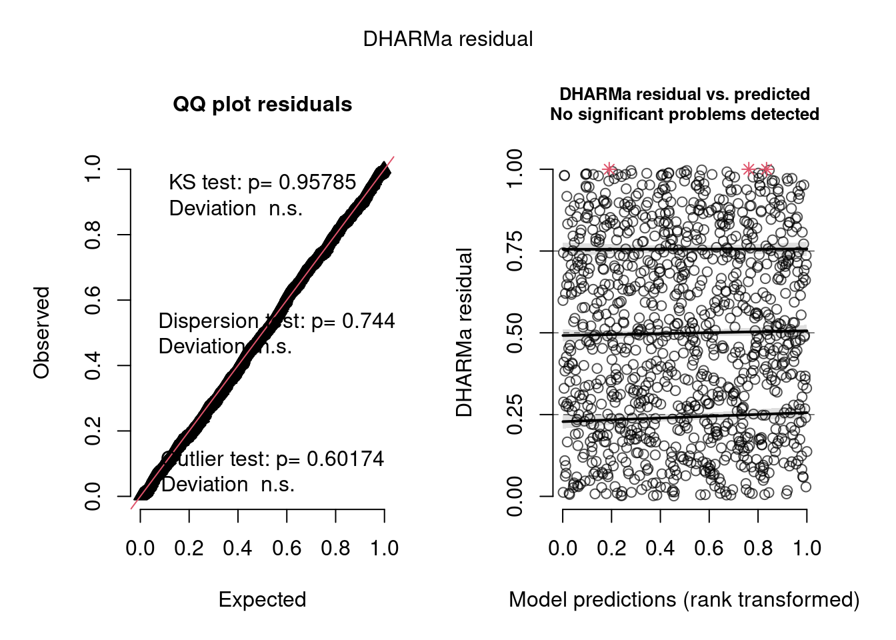
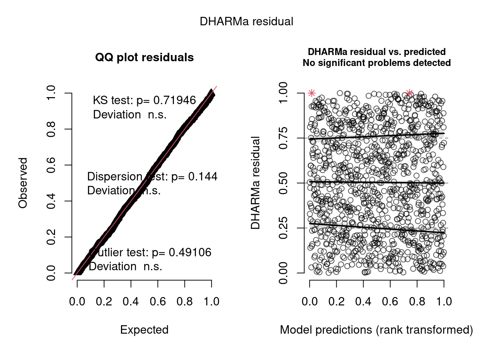
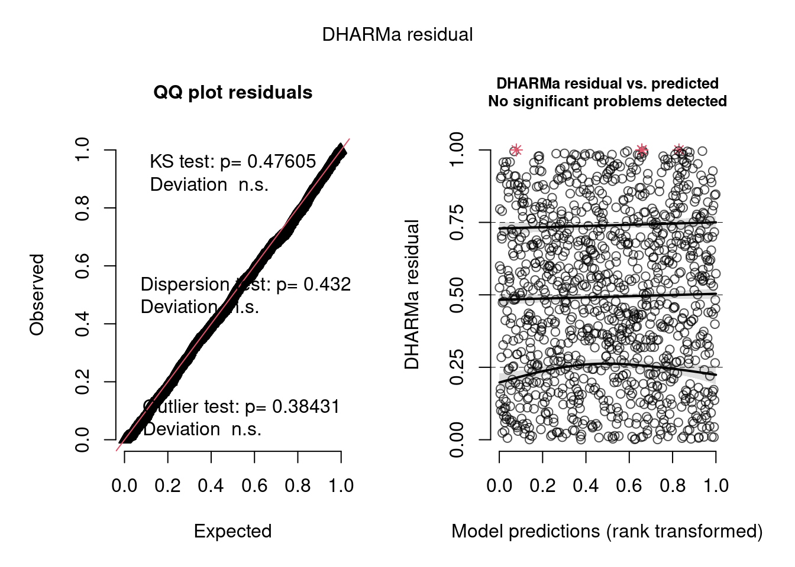

library(readxl)
library(dplyr)
library(lme4)
library(glmmTMB)
library(DHARMa)TP2 Bioestadística - Modelado de abundancia
Introducción
En esta etapa se modela la abundancia de mosquitos Aedes. A diferencia del modelo de presencia, donde la variable respuesta era binaria, aquí trabajamos con variables de conteo.
El análisis exploratorio mostró dos características importantes:
- una alta proporción de ceros;
- sobredispersión, es decir, una varianza mucho mayor que la media.
Por ese motivo se evaluaron modelos de conteo, principalmente binomial negativa (NB) y binomial negativa inflada en ceros (ZINB).
Carga de librerías y base de datos
# Ajustar esta ruta al directorio de trabajo donde se encuentra el repositorio
# setwd("/home/ariel/Repos/bioestadistica-aedes")
# Cargar base
datos <- suppressWarnings(
read_excel("aedes_data.xlsx")
)
dim(datos)[1] 8772 44Preparación de datos
Se decidió excluir del análisis aquellas observaciones con volumen de agua igual a cero, ya que en esos casos la presencia de larvas es imposible. Esos casos corresponden a ceros estructurales evidentes.
Además, variables como temperatura y pH no representan mediciones reales en ausencia de agua, sino valores nulos que podrían inducir interpretaciones erróneas en el modelo.
datos_mod <- datos %>%
filter(
Grid_type == "Index",
`log volume` > 0
) %>%
select(
Prevalence,
`Total mosquito emerged`,
`Aedes aegypti`,
`Aedes albopictus`,
Season,
Temperature,
pH,
`log volume`,
Macrohabitat,
Microhabitat,
Grid_no
) %>%
mutate(
Season = as.factor(Season),
Macrohabitat = as.factor(Macrohabitat),
Microhabitat = as.factor(Microhabitat),
Grid_no = as.factor(Grid_no)
)
dim(datos_mod)[1] 1066 11Se estandarizaron las variables continuas para que los coeficientes sean más comparables y para mejorar la estabilidad numérica de los modelos.
datos_mod <- datos_mod %>%
mutate(
temp_std = as.numeric(scale(Temperature)),
pH_std = as.numeric(scale(pH)),
logvol_std = as.numeric(scale(`log volume`))
)
dim(datos_mod)[1] 1066 14Evaluación de ceros y sobredispersión
Aunque se eliminaron los criaderos sin agua, la abundancia sigue presentando muchos ceros. Estos ceros pueden deberse a ausencia biológica de larvas o a condiciones no observadas que impiden la presencia larval incluso cuando hay agua.
table(datos_mod$`Total mosquito emerged` == 0)
FALSE TRUE
178 888 prop.table(table(datos_mod$`Total mosquito emerged` == 0))
FALSE TRUE
0.1669794 0.8330206 media <- mean(datos_mod$`Total mosquito emerged`)
varianza <- var(datos_mod$`Total mosquito emerged`)
indice_dispersion <- varianza / media
indice_dispersion[1] 11.80382La proporción de ceros es alta y el índice de dispersión es mayor que 1, lo que indica sobredispersión. Por este motivo, se descarta un modelo Poisson simple y se evalúan modelos de binomial negativa.
Modelo de abundancia total
Modelos candidatos
Se comparó un modelo de binomial negativa con un modelo de binomial negativa inflado en ceros.
modelo_nb <- glmmTMB(
`Total mosquito emerged` ~ Season + Microhabitat + temp_std + logvol_std + (1 | Grid_no),
family = nbinom2,
data = datos_mod
)
modelo_zinb <- glmmTMB(
`Total mosquito emerged` ~ Season + Microhabitat + temp_std + logvol_std + (1 | Grid_no),
ziformula = ~ Season,
family = nbinom2,
data = datos_mod
)Comparación de modelos
AIC(modelo_nb, modelo_zinb) df AIC
modelo_nb 16 1869.559
modelo_zinb 20 1840.477La diferencia de AIC es considerable. El modelo ZINB presenta mejor ajuste que el modelo NB, lo que sugiere que el componente de inflación de ceros permite representar mejor la estructura de la abundancia total.
Diagnóstico DHARMa
res_zinb <- simulateResiduals(modelo_zinb)
plot(res_zinb)
En el gráfico QQ, los residuos simulados se alinean adecuadamente con la línea esperada, lo que sugiere que la distribución asumida por el modelo es consistente con la estructura de los datos.
Los tests estadísticos asociados no resultan significativos:
- Uniformidad de residuos: no se detectan desviaciones importantes.
- Dispersión: no se observan problemas relevantes de sobredispersión o subdispersión residual.
- Outliers: la cantidad de valores extremos es razonable bajo el modelo.
El gráfico de residuos versus valores predichos no muestra patrones sistemáticos relevantes. En conjunto, los diagnósticos sugieren que el modelo ZINB presenta un ajuste adecuado.
Summary del modelo final
summary(modelo_zinb) Family: nbinom2 ( log )
Formula:
`Total mosquito emerged` ~ Season + Microhabitat + temp_std +
logvol_std + (1 | Grid_no)
Zero inflation: ~Season
Data: datos_mod
AIC BIC logLik -2*log(L) df.resid
1840.5 1939.9 -900.2 1800.5 1046
Random effects:
Conditional model:
Groups Name Variance Std.Dev.
Grid_no (Intercept) 1.686e-08 0.0001298
Number of obs: 1066, groups: Grid_no, 48
Dispersion parameter for nbinom2 family (): 0.922
Conditional model:
Estimate Std. Error z value Pr(>|z|)
(Intercept) 0.9441 0.3890 2.427 0.015227 *
Seasonfeb-march 1.0886 0.3115 3.494 0.000475 ***
Seasonjuly-september 0.1889 0.2745 0.688 0.491337
Seasonoctober-december -0.2205 0.3841 -0.574 0.565898
MicrohabitatDiscarded containers 0.2052 0.3566 0.576 0.564884
MicrohabitatDiscarded tires -0.4271 0.5347 -0.799 0.424416
MicrohabitatGrinding stones 0.6859 0.3691 1.858 0.063167 .
MicrohabitatPlant axils -0.7774 0.7694 -1.010 0.312297
MicrohabitatPots 0.5144 0.4292 1.199 0.230690
MicrohabitatStagnant water -0.1772 0.6327 -0.280 0.779440
MicrohabitatStorage containers 0.2811 0.4596 0.612 0.540740
MicrohabitatTree holes -0.4442 1.1430 -0.389 0.697565
temp_std -0.3793 0.1284 -2.953 0.003144 **
logvol_std -0.1424 0.1539 -0.926 0.354675
---
Signif. codes: 0 '***' 0.001 '**' 0.01 '*' 0.05 '.' 0.1 ' ' 1
Zero-inflation model:
Estimate Std. Error z value Pr(>|z|)
(Intercept) 1.0375 0.2719 3.815 0.000136 ***
Seasonfeb-march 0.4415 0.3195 1.382 0.167100
Seasonjuly-september -0.4703 0.2730 -1.723 0.084963 .
Seasonoctober-december 1.5422 0.3444 4.477 7.55e-06 ***
---
Signif. codes: 0 '***' 0.001 '**' 0.01 '*' 0.05 '.' 0.1 ' ' 1Interpretación
El modelo ZINB tiene dos componentes. El modelo condicional explica la abundancia esperada de larvas. El modelo de inflación de ceros explica la probabilidad de ceros extra.
La varianza asociada a Grid_no es prácticamente nula, lo que sugiere que, una vez consideradas las variables incluidas en el modelo, no queda una variabilidad importante entre grillas.
En el modelo condicional, feb-march presenta un efecto positivo y significativo. Esto indica que en esa estación la abundancia esperada es mayor respecto a la estación de referencia.
La temperatura presenta un efecto negativo significativo. Esto indica que, a medida que aumenta la temperatura, la abundancia esperada de larvas tiende a disminuir, manteniendo constantes las demás variables.
El volumen no muestra un efecto claro sobre la abundancia total en este modelo.
En el componente de inflación de ceros, october-december presenta un efecto positivo y significativo. Esto indica que en esa estación aumentan las odds de obtener ceros extra, lo que sugiere condiciones menos favorables para la presencia de larvas.
Modelo de abundancia para Aedes aegypti
Modelos candidatos
modelo_aegypti_nb <- glmmTMB(
`Aedes aegypti` ~ Season + Microhabitat + temp_std + logvol_std + (1 | Season),
family = nbinom2,
data = datos_mod
)
modelo_aegypti_zinb <- glmmTMB(
`Aedes aegypti` ~ Season + Microhabitat + temp_std + logvol_std + (1 | Season),
ziformula = ~ Season,
family = nbinom2,
data = datos_mod
)Comparación de modelos
AIC(modelo_aegypti_nb, modelo_aegypti_zinb) df AIC
modelo_aegypti_nb 16 1061.879
modelo_aegypti_zinb 20 1059.016La comparación entre NB y ZINB para Aedes aegypti muestra una diferencia de AIC pequeña. En este contexto se selecciona el modelo NB por parsimonia, evitando incluir un componente de inflación de ceros innecesario.
Diagnóstico DHARMa
res_aegypti_nb <- simulateResiduals(modelo_aegypti_nb)
plot(res_aegypti_nb)
En el gráfico QQ, los residuos simulados siguen adecuadamente la línea esperada. Los tests de uniformidad, dispersión y outliers no resultan significativos, por lo que no se detectan problemas importantes en los residuos.
El gráfico de residuos versus valores predichos no muestra patrones sistemáticos fuertes. Se observan algunos residuos altos aislados, pero no generan una desviación importante del ajuste general.
Summary del modelo final
summary(modelo_aegypti_nb) Family: nbinom2 ( log )
Formula:
`Aedes aegypti` ~ Season + Microhabitat + temp_std + logvol_std +
(1 | Season)
Data: datos_mod
AIC BIC logLik -2*log(L) df.resid
1061.9 1141.4 -514.9 1029.9 1050
Random effects:
Conditional model:
Groups Name Variance Std.Dev.
Season (Intercept) 1.882e-11 4.339e-06
Number of obs: 1066, groups: Season, 4
Dispersion parameter for nbinom2 family (): 0.0415
Conditional model:
Estimate Std. Error z value Pr(>|z|)
(Intercept) -1.709e+00 8.146e-01 -2.098 0.03590 *
Seasonfeb-march 9.904e-01 5.858e-01 1.691 0.09087 .
Seasonjuly-september 6.043e-02 5.674e-01 0.106 0.91518
Seasonoctober-december -1.589e+00 6.299e-01 -2.523 0.01164 *
MicrohabitatDiscarded containers 2.508e-01 7.279e-01 0.344 0.73045
MicrohabitatDiscarded tires 9.431e-01 1.152e+00 0.819 0.41284
MicrohabitatGrinding stones 2.709e+00 9.055e-01 2.992 0.00277 **
MicrohabitatPlant axils -2.004e+01 1.643e+04 -0.001 0.99903
MicrohabitatPots 1.267e+00 8.030e-01 1.578 0.11465
MicrohabitatStagnant water -7.679e-01 1.441e+00 -0.533 0.59409
MicrohabitatStorage containers 1.273e+00 8.751e-01 1.455 0.14578
MicrohabitatTree holes -1.705e+01 4.621e+03 -0.004 0.99706
temp_std -6.525e-01 2.235e-01 -2.919 0.00351 **
logvol_std 3.069e-01 2.909e-01 1.055 0.29130
---
Signif. codes: 0 '***' 0.001 '**' 0.01 '*' 0.05 '.' 0.1 ' ' 1Interpretación
La varianza asociada al efecto aleatorio de Season es prácticamente nula. Esto indica que, una vez consideradas las variables del modelo, no queda una variabilidad importante entre estaciones a nivel aleatorio.
El intercepto indica una abundancia esperada baja en la condición de referencia.
feb-march muestra una tendencia positiva marginal, lo que sugiere una posible mayor abundancia respecto a la estación de referencia, aunque la evidencia no es concluyente.
october-december presenta un efecto negativo significativo. Esto indica que la abundancia esperada de Aedes aegypti es menor en esa estación respecto a la estación de referencia.
Dentro de los microhábitats, Grinding stones presenta un efecto positivo significativo. Esto indica una abundancia esperada considerablemente mayor en ese microhábitat respecto a la categoría de referencia.
La temperatura presenta un efecto negativo significativo: a mayor temperatura, menor abundancia esperada de Aedes aegypti. El volumen no muestra un efecto claro.
Modelo de abundancia para Aedes albopictus
Modelos candidatos
modelo_albopictus_nb <- glmmTMB(
`Aedes albopictus` ~ Microhabitat + temp_std + logvol_std + (1 | Season),
family = nbinom2,
data = datos_mod
)
modelo_albopictus_zinb <- glmmTMB(
`Aedes albopictus` ~ Macrohabitat + temp_std + logvol_std + (1 | Season),
ziformula = ~ Season,
family = nbinom2,
data = datos_mod
)Comparación de modelos
AIC(modelo_albopictus_nb, modelo_albopictus_zinb) df AIC
modelo_albopictus_nb 13 645.3872
modelo_albopictus_zinb 14 596.4253La comparación muestra una diferencia de AIC considerable a favor del modelo ZINB. Esto sugiere que, para Aedes albopictus, existe evidencia de un proceso adicional de generación de ceros, por lo que se selecciona el modelo ZINB.
Diagnóstico DHARMa
res_albopictus_zinb <- simulateResiduals(modelo_albopictus_zinb)
plot(res_albopictus_zinb)
En el gráfico QQ, los residuos simulados siguen adecuadamente la línea esperada. Los tests de uniformidad, dispersión y outliers no resultan significativos.
En el gráfico de residuos versus valores predichos no se observan patrones sistemáticos fuertes. Las curvas de cuantiles se mantienen relativamente horizontales y dentro de las bandas de confianza. En conjunto, el modelo ZINB presenta un ajuste adecuado.
Summary del modelo final
summary(modelo_albopictus_zinb) Family: nbinom2 ( log )
Formula:
`Aedes albopictus` ~ Macrohabitat + temp_std + logvol_std + (1 | Season)
Zero inflation: ~Season
Data: datos_mod
AIC BIC logLik -2*log(L) df.resid
596.4 666.0 -284.2 568.4 1052
Random effects:
Conditional model:
Groups Name Variance Std.Dev.
Season (Intercept) 1.334e-09 3.653e-05
Number of obs: 1066, groups: Season, 4
Dispersion parameter for nbinom2 family (): 1.63
Conditional model:
Estimate Std. Error z value Pr(>|z|)
(Intercept) 2.1679 0.3936 5.508 3.63e-08 ***
MacrohabitatHigh dense -1.9782 0.6073 -3.257 0.00113 **
MacrohabitatLake -0.5960 0.5416 -1.100 0.27112
MacrohabitatLow dense 0.0756 0.6058 0.125 0.90069
MacrohabitatMedium dense -0.8675 0.5454 -1.591 0.11172
MacrohabitatPlantation -0.1909 0.4360 -0.438 0.66153
temp_std 0.4280 0.2295 1.865 0.06214 .
logvol_std -0.3388 0.2607 -1.299 0.19378
---
Signif. codes: 0 '***' 0.001 '**' 0.01 '*' 0.05 '.' 0.1 ' ' 1
Zero-inflation model:
Estimate Std. Error z value Pr(>|z|)
(Intercept) 5.012 1.008 4.974 6.57e-07 ***
Seasonfeb-march -1.120 1.161 -0.964 0.33500
Seasonjuly-september -3.125 1.020 -3.065 0.00218 **
Seasonoctober-december -0.770 1.125 -0.685 0.49365
---
Signif. codes: 0 '***' 0.001 '**' 0.01 '*' 0.05 '.' 0.1 ' ' 1Interpretación
El modelo ZINB para Aedes albopictus también tiene dos componentes: abundancia e inflación de ceros.
La varianza asociada al efecto aleatorio de Season es prácticamente nula. Esto indica que, una vez consideradas las variables del modelo, no queda una variabilidad importante entre estaciones a nivel aleatorio.
En el modelo condicional, MacrohabitatHigh dense presenta un efecto negativo significativo. Esto indica que la abundancia esperada de Aedes albopictus es menor en zonas de alta densidad respecto al macrohábitat de referencia.
La temperatura muestra una tendencia positiva marginal. Esto sugiere que la abundancia esperada podría aumentar con la temperatura, aunque la evidencia no es concluyente.
El volumen no muestra un efecto claro sobre la abundancia de Aedes albopictus.
En el componente de inflación de ceros, july-september presenta un efecto negativo significativo. Esto indica una reducción importante de las odds de obtener ceros extra en esa estación. En otras palabras, durante july-september disminuye la probabilidad de ausencia estructural, lo que sugiere condiciones más favorables para la presencia de Aedes albopictus.
Conclusión general
El modelado de abundancia confirma que los datos presentan características propias de conteos ecológicos: muchos ceros, sobredispersión y estructura agrupada.
Para la abundancia total, el modelo ZINB fue más adecuado que el modelo NB, indicando que el exceso de ceros debía ser modelado explícitamente.
Para Aedes aegypti, el modelo NB fue suficiente y más parsimonioso. En esta especie se observó una menor abundancia en october-december, mayor abundancia en Grinding stones y un efecto negativo de la temperatura.
Para Aedes albopictus, el modelo ZINB fue más adecuado. La abundancia fue menor en zonas High dense, y july-september redujo fuertemente la probabilidad de ceros extra.
En conjunto, los resultados sugieren que las especies no responden exactamente igual a las mismas variables. Por eso, además de modelar la abundancia total, resulta útil analizar cada especie por separado.